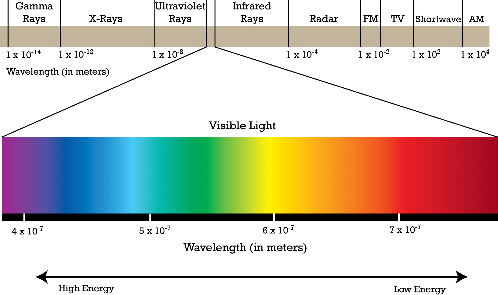

Light or visible light is electromagnetic radiation that can be perceived by the human eye.[1] Visible light is usually defined as having wavelengths in the range of 400–700 nanometres (nm), corresponding to frequencies of 750–420 terahertz, between the infrared (with longer wavelengths) and the ultraviolet (with shorter wavelengths).[2][3]
In physics, the term "light" may refer more broadly to electromagnetic radiation of any wavelength, whether visible or not.[4][5] In this sense, gamma rays, X-rays, microwaves and radio waves are also light. The primary properties of light are intensity, propagation direction, frequency or wavelength spectrum and polarization. Its speed in vacuum, 299792458 m/s, is one of the fundamental constants of nature.[6] Like all types of electromagnetic radiation, visible light propagates by massless elementary particles called photons that represents the quanta of electromagnetic field, and can be analyzed as both waves and particles. The study of light, known as optics, is an important research area in modern physics.
The main source of natural light on Earth is the Sun. Historically, another important source of light for humans has been fire, from ancient campfires to modern kerosene lamps. With the development of electric lights and power systems, electric lighting has effectively replaced firelight.
